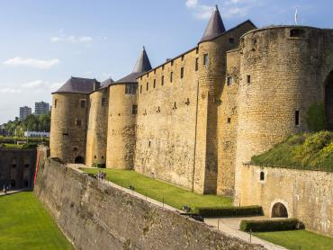
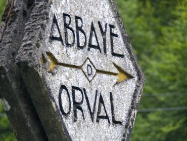
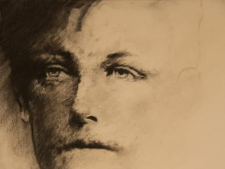

Geschiedenis
Fortenroute
Citadellen en vestingen langs Maas en grens — het bewogen verleden van de streek.
Ardennen · Routes
De Ardennen laten zich goed rijden, fietsen en wandelen langs een thema: forten, abdijen, bier, dichters en legenden.
Kies je route

Citadellen en vestingen langs Maas en grens — het bewogen verleden van de streek.


